Show:
Air-to-water heat pumps 5 items · 40 pcs
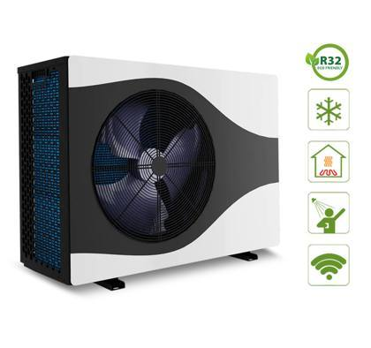
Representative photoAir-to-water heat pump 9 kW (R32)
Pompa ciepła (nowa) SUN 03R32B-240 9 kW (jedna sztuka bez kartonu) [1]
New · monoblock · 9 kW · refrigerant R32 · one unit without carton
Est. weight ≈ 1.5 t
14 pcsRef #32
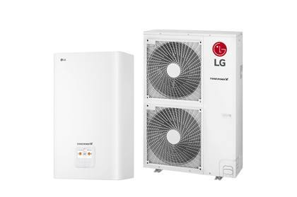
Representative photoSplit heat pump (R410A)
Pompa ciepła (nowa) SPLIT R410 A - składa się z 2 części [3] [3a]
New · split system in 2 parts (outdoor + indoor unit) · R410A
Est. weight ≈ 0.4 t
3 pcsRef #31
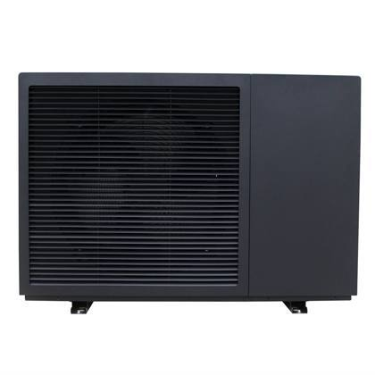
Representative photoAir-to-water heat pump 10 kW, 400 V
Pompaciepła (nowa) SUNRAIN BLN010-3 400V 10 kW [2]
New · Sunrain monoblock · 10 kW · 400 V three-phase
Est. weight ≈ 0.4 t
3 pcsRef #41
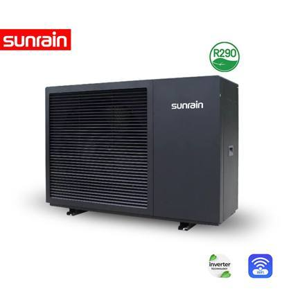
Representative photo – mixed modelsAir-to-water heat pump – ex-display / returns
Pompy ciepła (modele powystawowe, zwroty i reklamacje) [4]
Mixed models: ex-display units, customer returns and complaint units – untested
Est. weight ≈ 1.9 t
19 pcsRef #42
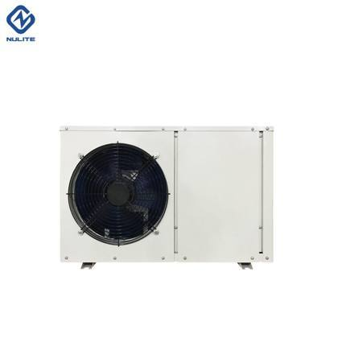
Representative photoAir-to-water heat pump
Pompa ciepła REALM ENERGY RMAW-03ZR1-V [100]
Realm Energy · condition not stated
Est. weight ≈ 0.1 t
1 pcsRef #33
Inverter compressors (Panasonic) 6 items · 19 pcs
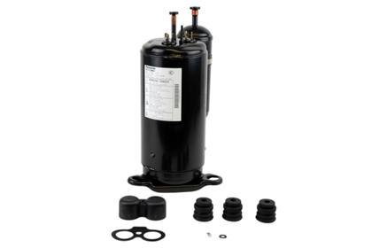
Representative photoInverter rotary compressor (Panasonic)
Sprężarka PANASONIC 9KD240ZAA2J [19]
Panasonic DC inverter rotary compressor for heat pumps / air conditioners
Est. weight ≈ 0.1 t
4 pcsRef #54
 Representative photo
Representative photoInverter rotary compressor (Panasonic)
Sprężarka PANASONIC 5KD240ZFA21 [20]
Panasonic DC inverter rotary compressor for heat pumps / air conditioners
Est. weight ≈ 0.1 t
3 pcsRef #53
 Representative photo
Representative photoInverter rotary compressor (Panasonic)
Sprężarka PANASONIC H240D5KZAAJ2 [103]
Panasonic DC inverter rotary compressor for heat pumps / air conditioners
Est. weight ≈ 0.0 t
1 pcsRef #55
 Representative photo
Representative photoInverter rotary compressor (Panasonic)
Sprężarka PANASONIC H420D5VZAAJ2 [21]
Panasonic DC inverter rotary compressor for heat pumps / air conditioners
Est. weight ≈ 0.0 t
1 pcsRef #56
 Representative photo
Representative photoInverter rotary compressor (Panasonic)
Sprężarka PANASONIC-9 RD220ZA 2J [18]
Panasonic DC inverter rotary compressor for heat pumps / air conditioners
Est. weight ≈ 0.0 t
1 pcsRef #58
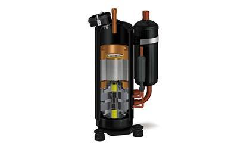
Representative photo – damaged unitsCompressor – damaged / scrap
Sprężarka PANASONIC uszkodzona/złom [104]
Panasonic compressors, damaged – for parts or metal recovery
Est. weight ≈ 0.2 t
9 pcsRef #57
Circulation & water pumps 4 items · 6 pcs
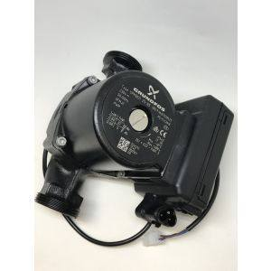
Product photoCirculation pump
Pompa grundfoss - UPM GEO 130 [28]
Grundfos UPM GEO
3 pcsRef #37
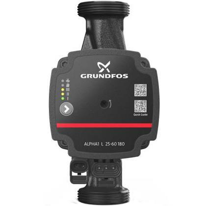
Product photoCirculation pump
Pompa grundfoss - ALPHA1 L 25-60 180 [111]
Grundfos ALPHA1 L 25-60 180
1 pcsRef #36
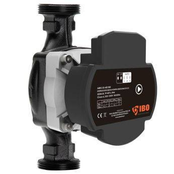
Product photoCirculation pump
Pompa obiegowa IBO AMG 25-40 180 [102]
IBO AMG 25-40 180
1 pcsRef #38
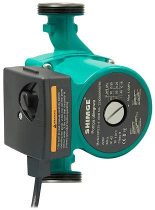
Representative photoWater pump
Pompa SHIMGE [112]
Shimge
1 pcsRef #40
Refrigerant recovery & service equipment 15 items · 20 pcs
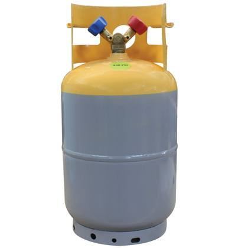
Representative photoRefrigerant recovery cylinder
Butle dwufazowe – butle do odzysku czynnika chłodniczego [9]
Two-port cylinders for refrigerant recovery
4 pcsRef #5
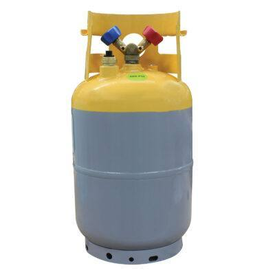
Representative photoRefrigerant charging cylinder
Butla jednofazowa do napełniania [10]
3 pcsRef #3
 Representative photo
Representative photoRefrigerant charging cylinder
Butla jednofazowa do napełniania [105]
1 pcsRef #4
Refrigerant leak detector
Refrigerant leak detector
Detektor do czynników chłodniczych – wykrywacz nieszczelności [40]
1 pcsRef #8
Pipe bender
Pipe bender
Giętarka [49]
1 pcsRef #14
Flaring tool
Flaring tool
Kielicharka [109]
1 pcsRef #17
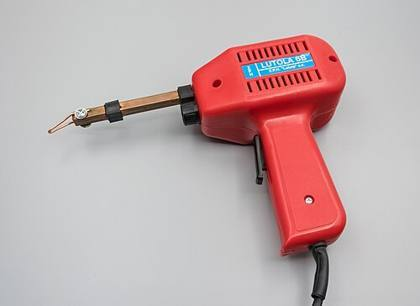
Representative photoSoldering iron
Lutownica elektryczna UTL [52]
1 pcsRef #21
 Representative photo
Representative photoSoldering iron
Lutownica Modeco – expert [36]
1 pcsRef #22
 Representative photo
Representative photoSystem filling pump on cart
Pompa do napełniania instalacji na wózku [64]
1 pcsRef #34
Oil pump
Oil pump
Pompa do oleju 160W - Marpol
Marpol 160 W
1 pcsRef #35
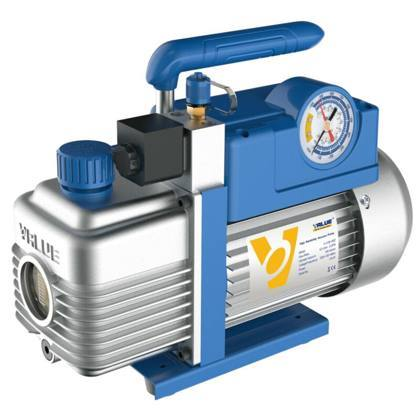
Representative photoVacuum pump (refrigeration)
Pompa próżniowa VALUE [110]
Value
1 pcsRef #39
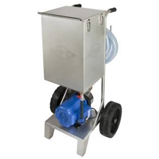
Representative photoFlushing station for refrigeration circuits
Urządzenie stacja do płukania układów chłodniczych [87]
1 pcsRef #66
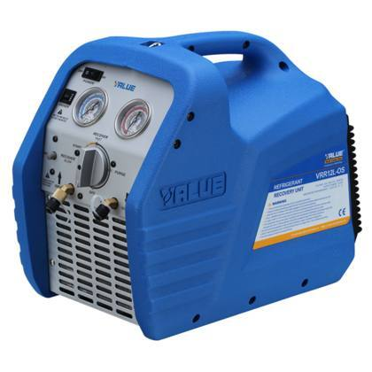
Representative photoRefrigerant recovery machine
VRR Stacja do odzysku czynnika Value Vrr 12L [6]
Value VRR12L
1 pcsRef #67
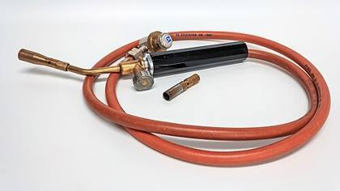
Representative photoBrazing kit
Zestaw do lutowania twardego [67]
1 pcsRef #73
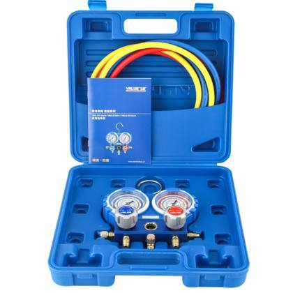
Representative photoManifold gauge set
Zestaw manometrów do klimatyzacji [8]
1 pcsRef #75
Installation parts, fittings & components 14 items · 31 pcs
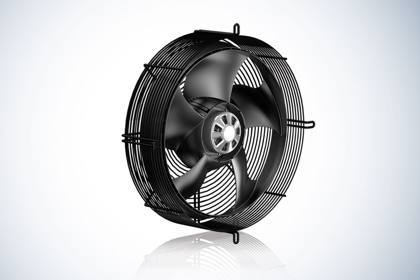
Representative photoHeat pump fan
Wentylatory do pomp ciepła
Outdoor-unit fans
11 pcsRef #68
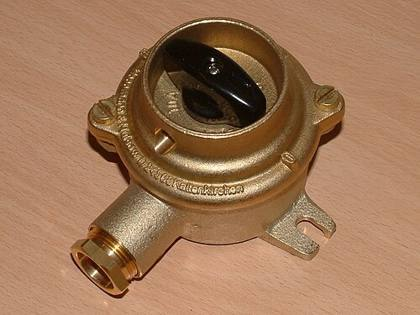
Representative photoSwitch
Przełącznik [120]
1 pcsRef #43
Air-conditioning pipes
Air-conditioning pipes
Rury do klimatyzacji białe i czarne [136]
1 pcsRef #44
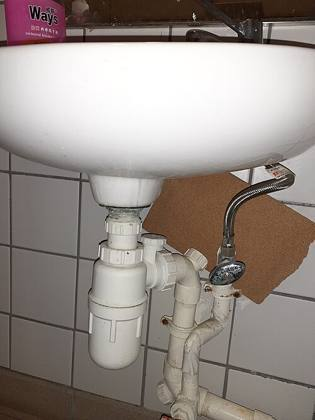
Representative photoPipes, mixed (PP, drainage)
Rury MIX (PP, kanalizacyjne) [63]
1 pcsRef #45
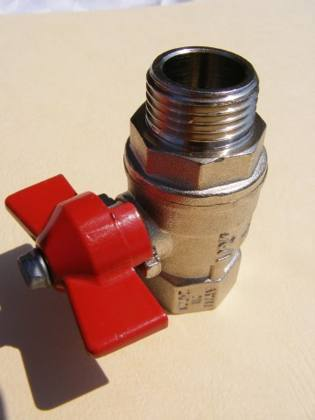
Representative photoBox of ball valves
Skrzynka – zawory kulowe [124]
1 pcsRef #46
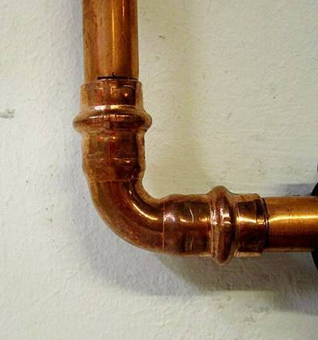
Representative photoBox of fittings – copper
Skrzynka złączek - miedź [129]
1 pcsRef #49
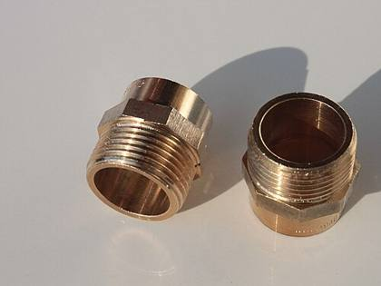
Representative photoBox of fittings – brass
Skrzynka złączek - mosiądz [119, 121, 122, 123, 127]
1 pcsRef #50
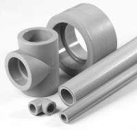
Representative photoBox of fittings – PP
Skrzynka złączek - pp [125, 126, 128, 130, 131, 132]
1 pcsRef #51
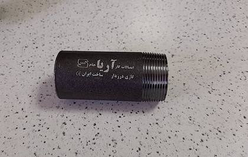
Representative photoBox of fittings – steel
Skrzynka złączek - stal [129]
1 pcsRef #52
Electrical box
Electrical box
Skrzynka elektryczna mała [116]
6 pcsRef #48
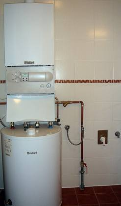
Representative photoSmall buffer / hot-water tank
Bufor (butla mała - zasobnik CWU) [118]
2 pcsRef #2
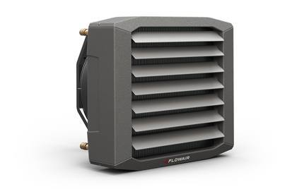
Representative photoAir heater (unit heater)
Nagrzewnica Flowair
Flowair
1 pcsRef #26
Electrical box
Electrical box
Skrzynka elektryczna duża [117]
1 pcsRef #47
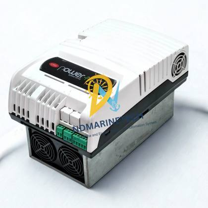
Representative photoThree-phase inverter drive – damaged
Falowniki trójfazowe CAREL 0 (uszkodzone) [54]
Carel · damaged
2 pcsRef #13
Installer tools & workshop 20 items · 20 pcs
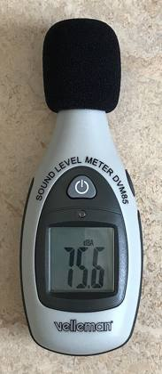
Representative photoSound level meter
Decybelomierz Model GM 1356 [38]
1 pcsRef #7
Wire detector
Wire detector
Detektor do przewodów
1 pcsRef #9
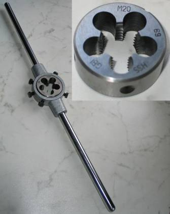
Representative photoThread-cutting set
Gwintownice komplet [46]
1 pcsRef #15
Inspection camera
Kamera inspekcyjna MAGNUSOM [50]
1 pcsRef #16
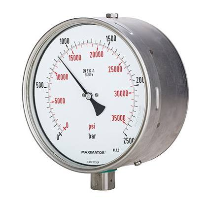
Representative photoPressure gauge
Manometr [114]
1 pcsRef #23
 Representative photo
Representative photoMini stacker 200 kg
Mini sztaplarka hydrauliczna bezstopniowa 200 kg CORMAK [11]
Cormak
1 pcsRef #24
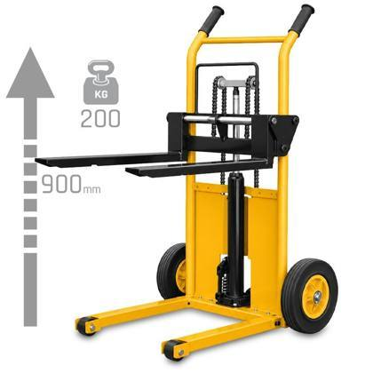
Representative photoMini stacker 200 kg
Mini sztaplarka ręczna bezstopniowa 200 kg CORMAK [11a]
Cormak
1 pcsRef #25
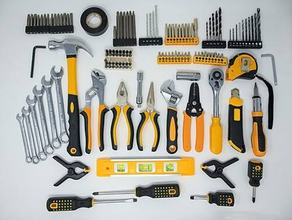
Representative photoGeneral hand tools
Narzędzia ogólne (śrubokręty, piła, młotek, kombinerki itp.) [29]
Screwdrivers, saw, hammer, pliers etc.
1 pcsRef #28
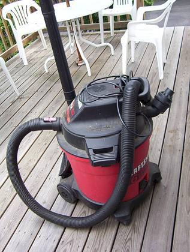
Representative photoVacuum cleaner
Odkurzacz Riwall
1 pcsRef #29
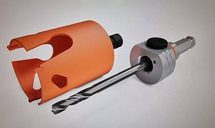
Representative photoHole saw for drywall
Otwornica do cięcia w regipsie o wartości [44]
1 pcsRef #30
 Representative photo
Representative photoAngle grinder
Szlifierka kątowa AINHEU 500V [107]
1 pcsRef #61
 Representative photo
Representative photoAngle grinder
Szlifierka kątowa MACalister [106]
1 pcsRef #62
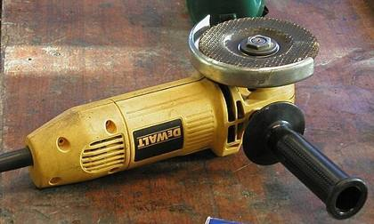
Representative photoAngle grinder
Szlifierka kątowa Makita [30]
1 pcsRef #63
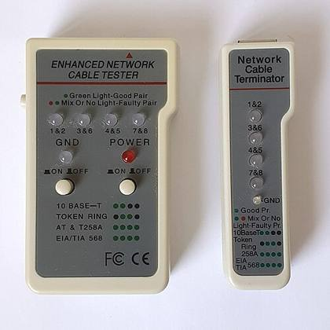
Representative photoCable tester
Tester do kabli Master Splink [41]
1 pcsRef #64
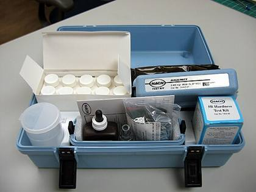
Representative photoWater hardness tester
Tester do twardości wody [113]
1 pcsRef #65
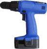
Representative photoDrill
Wiertarka ALTMANN K-MW1500B2 [101]
1 pcsRef #69
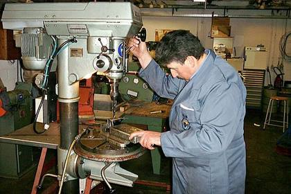
Representative photoBench drill
wiertarka MacAllister stołowa [5]
1 pcsRef #70
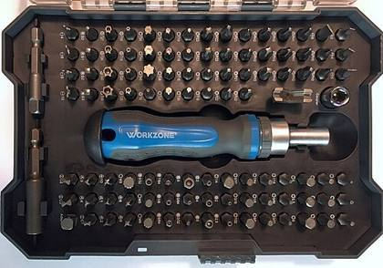
Representative photoBit set
Zestaw bitów YATO YT-0400 [1115]
1 pcsRef #72
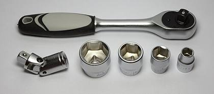
Representative photoSocket set (incomplete)
Zestaw kluczy nasadowych (niekompletny) [135]
1 pcsRef #74
PP pipe welder
PP pipe welder
Zgrzewarka do rur PP MAR-POL (bez kamieni) [108]
Without heating dies
1 pcsRef #76
Office & other 12 items · 14 pcs
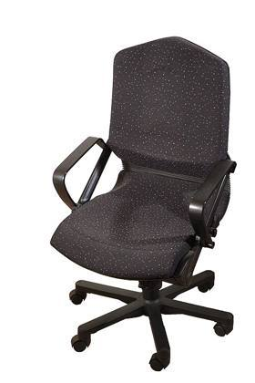
Representative photoChair
Krzesło czarne kubełkowe plastikowe
2 pcsRef #19
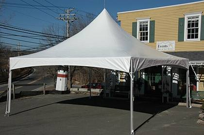
Representative photoTrade-fair tent
Namiot na targi [27]
2 pcsRef #27
Desk
Desk
Biurko
1 pcsRef #1
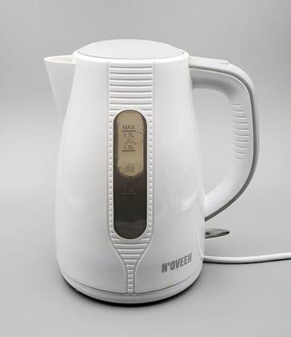
Representative photoElectric kettle
Czajnik elektryczny
1 pcsRef #6
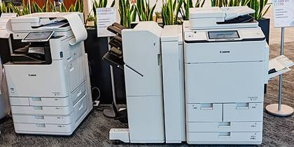
Representative photoPrinter
Drukarka DELL
Dell
1 pcsRef #10
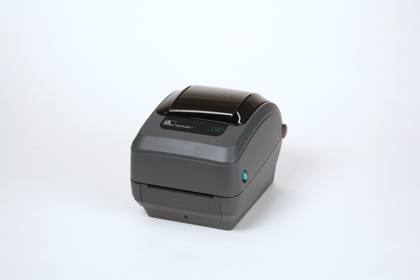
Product photoLabel printer
Drukarka do etykiet gk420t [85]
Zebra GK420t
1 pcsRef #11
Label printer
Drukarka etykiet DYMO [86]
DYMO
1 pcsRef #12
 Representative photo
Representative photoChair
Krzesło biurowe
1 pcsRef #18
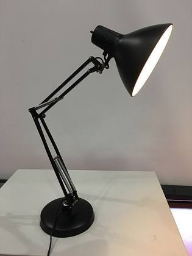
Representative photoDesk lamp
Lampka biurkowa
1 pcsRef #20
Office cabinet
Office cabinet
Szafa biurowa
1 pcsRef #59
Drawer unit
Drawer unit
Szafka z szufladami (kontenerek)
1 pcsRef #60
Coat stand
Wieszak na ubrania
1 pcsRef #71
Summary of contents
By condition
| Status | Items | Quantity (pcs) | Share | Est. weight |
|---|---|---|---|---|
| New New, unused unit. | 3 | 20 | 13.3% | ≈ 2.3 t |
| Ex-display / returns Ex-display units, customer returns and complaint units – untested, condition varies. | 1 | 19 | 12.7% | ≈ 1.9 t |
| Spare part / component Component or spare part for installation or repair, not a complete unit. | 14 | 29 | 19.3% | ≈ 0.2 t |
| Used / as seen Used equipment, sold as seen; condition not individually tested. | 56 | 71 | 47.3% | ≈ 0.1 t |
| Damaged / for parts Not working – for spare parts or metal recovery. | 2 | 11 | 7.3% | ≈ 0.2 t |
| Total | 76 | 150 | 100% | ≈ 4.7 t |
By product type
| Product type | Items | Quantity (pcs) | Share | Est. weight |
|---|---|---|---|---|
| Air-to-water heat pump – ex-display / returns | 1 | 19 | 12.7% | ≈ 1.9 t |
| Air-to-water heat pump 9 kW (R32) | 1 | 14 | 9.3% | ≈ 1.5 t |
| Heat pump fan | 1 | 11 | 7.3% | – |
| Inverter rotary compressor (Panasonic) | 5 | 10 | 6.7% | ≈ 0.2 t |
| Compressor – damaged / scrap | 1 | 9 | 6.0% | ≈ 0.2 t |
| Electrical box | 2 | 7 | 4.7% | – |
| Circulation pump | 3 | 5 | 3.3% | – |
| Refrigerant charging cylinder | 2 | 4 | 2.7% | – |
| Refrigerant recovery cylinder | 1 | 4 | 2.7% | – |
| Chair | 2 | 3 | 2.0% | – |
| Split heat pump (R410A) | 1 | 3 | 2.0% | ≈ 0.4 t |
| Air-to-water heat pump 10 kW, 400 V | 1 | 3 | 2.0% | ≈ 0.4 t |
| Angle grinder | 3 | 3 | 2.0% | – |
| Small buffer / hot-water tank | 1 | 2 | 1.3% | – |
| Label printer | 2 | 2 | 1.3% | – |
| Three-phase inverter drive – damaged | 1 | 2 | 1.3% | – |
| Soldering iron | 2 | 2 | 1.3% | – |
| Mini stacker 200 kg | 2 | 2 | 1.3% | – |
| Trade-fair tent | 1 | 2 | 1.3% | – |
| Desk | 1 | 1 | 0.7% | – |
| Electric kettle | 1 | 1 | 0.7% | – |
| Sound level meter | 1 | 1 | 0.7% | – |
| Refrigerant leak detector | 1 | 1 | 0.7% | – |
| Wire detector | 1 | 1 | 0.7% | – |
| Printer | 1 | 1 | 0.7% | – |
| Pipe bender | 1 | 1 | 0.7% | – |
| Thread-cutting set | 1 | 1 | 0.7% | – |
| Inspection camera | 1 | 1 | 0.7% | – |
| Flaring tool | 1 | 1 | 0.7% | – |
| Desk lamp | 1 | 1 | 0.7% | – |
| Pressure gauge | 1 | 1 | 0.7% | – |
| Air heater (unit heater) | 1 | 1 | 0.7% | – |
| General hand tools | 1 | 1 | 0.7% | – |
| Vacuum cleaner | 1 | 1 | 0.7% | – |
| Hole saw for drywall | 1 | 1 | 0.7% | – |
| Air-to-water heat pump | 1 | 1 | 0.7% | ≈ 0.1 t |
| System filling pump on cart | 1 | 1 | 0.7% | – |
| Oil pump | 1 | 1 | 0.7% | – |
| Vacuum pump (refrigeration) | 1 | 1 | 0.7% | – |
| Water pump | 1 | 1 | 0.7% | – |
| Switch | 1 | 1 | 0.7% | – |
| Air-conditioning pipes | 1 | 1 | 0.7% | – |
| Pipes, mixed (PP, drainage) | 1 | 1 | 0.7% | – |
| Box of ball valves | 1 | 1 | 0.7% | – |
| Box of fittings – copper | 1 | 1 | 0.7% | – |
| Box of fittings – brass | 1 | 1 | 0.7% | – |
| Box of fittings – PP | 1 | 1 | 0.7% | – |
| Box of fittings – steel | 1 | 1 | 0.7% | – |
| Office cabinet | 1 | 1 | 0.7% | – |
| Drawer unit | 1 | 1 | 0.7% | – |
| Cable tester | 1 | 1 | 0.7% | – |
| Water hardness tester | 1 | 1 | 0.7% | – |
| Flushing station for refrigeration circuits | 1 | 1 | 0.7% | – |
| Refrigerant recovery machine | 1 | 1 | 0.7% | – |
| Drill | 1 | 1 | 0.7% | – |
| Bench drill | 1 | 1 | 0.7% | – |
| Coat stand | 1 | 1 | 0.7% | – |
| Bit set | 1 | 1 | 0.7% | – |
| Brazing kit | 1 | 1 | 0.7% | – |
| Socket set (incomplete) | 1 | 1 | 0.7% | – |
| Manifold gauge set | 1 | 1 | 0.7% | – |
| PP pipe welder | 1 | 1 | 0.7% | – |
| Total | 76 | 150 | 100% | ≈ 4.7 t |
By categorie
| Categorie | Items | Quantity (pcs) | Share | Est. weight |
|---|---|---|---|---|
| Air-to-water heat pumps | 5 | 40 | 26.7% | ≈ 4.3 t |
| Inverter compressors (Panasonic) | 6 | 19 | 12.7% | ≈ 0.4 t |
| Circulation & water pumps | 4 | 6 | 4.0% | – |
| Refrigerant recovery & service equipment | 15 | 20 | 13.3% | – |
| Installation parts, fittings & components | 14 | 31 | 20.7% | – |
| Installer tools & workshop | 20 | 20 | 13.3% | – |
| Office & other | 12 | 14 | 9.3% | – |
| Total | 76 | 150 | 100% | ≈ 4.7 t |
Shipping estimate
| Total volume (approx.) | ≈ 28–40 m³ |
| Total weight (approx.) | ≈ 5–6 t |
| 40′ High Cube containers | 1 |
| 20′ Standard containers | 1–2 |
Estimated from typical packed sizes and weights of 9–10 kW outdoor units (≈ 0.5 m³, 100–130 kg each) plus compressors, pumps, tools and parts. Heat pumps ship upright on pallets; pre-charged units contain refrigerant (R32 / R410A).
Container capacity used: 40′ HC ≈ 68 m³ / 26.5 t, 20′ ≈ 28 m³ / 24 t (practical loading).
Container capacity used: 40′ HC ≈ 68 m³ / 26.5 t, 20′ ≈ 28 m³ / 24 t (practical loading).